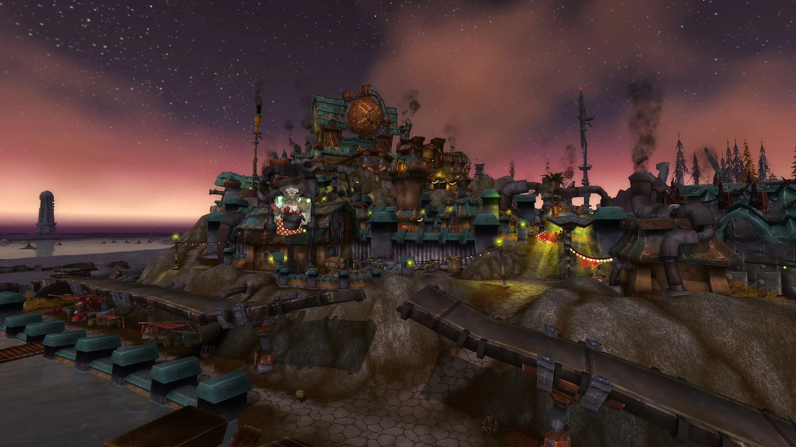

| 
Capital: Muelle Pantoque Muelle Pantoque apareció en un tiempo récord y su construcción intrínsecamente goblin ha propiciado una atmósfera de libertinaje y desorden donde no faltan los salones de juego, casas de placer y otros lujos. |
Montura racial: Triciclo El robusto triciclo de transporte es una creación del notablemente anciano Jibidiah «Sin dedos» Gragglefutz. Años de contratiempos en la producción desembocaron en un veloz, recio y, sobre todo, volátilmente estable vehículo que sigue siendo muy popular entre los goblins. |
||||
| Clases disponibles | Raciales |
|---|---|


|

|


|


|